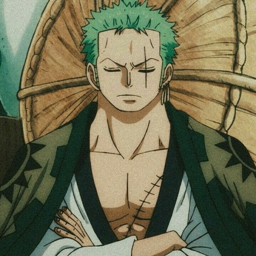
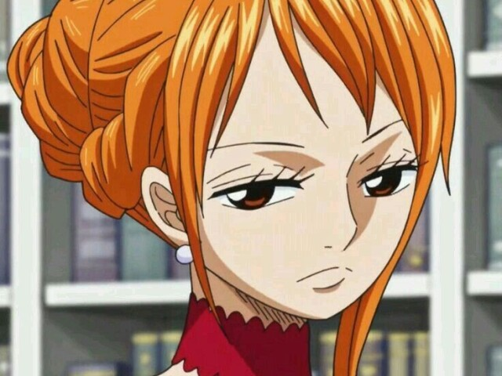
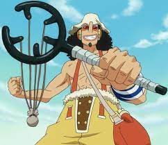
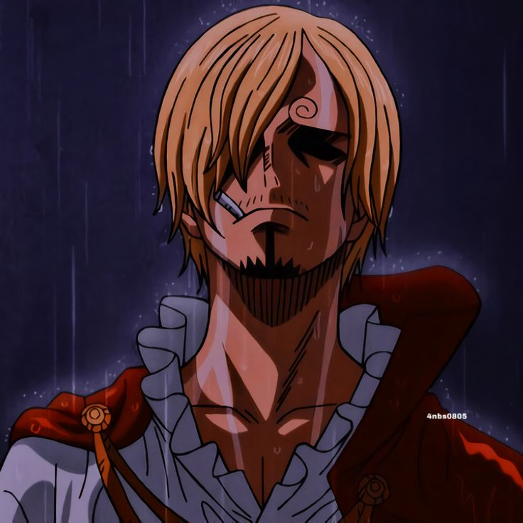
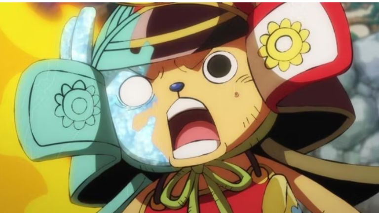
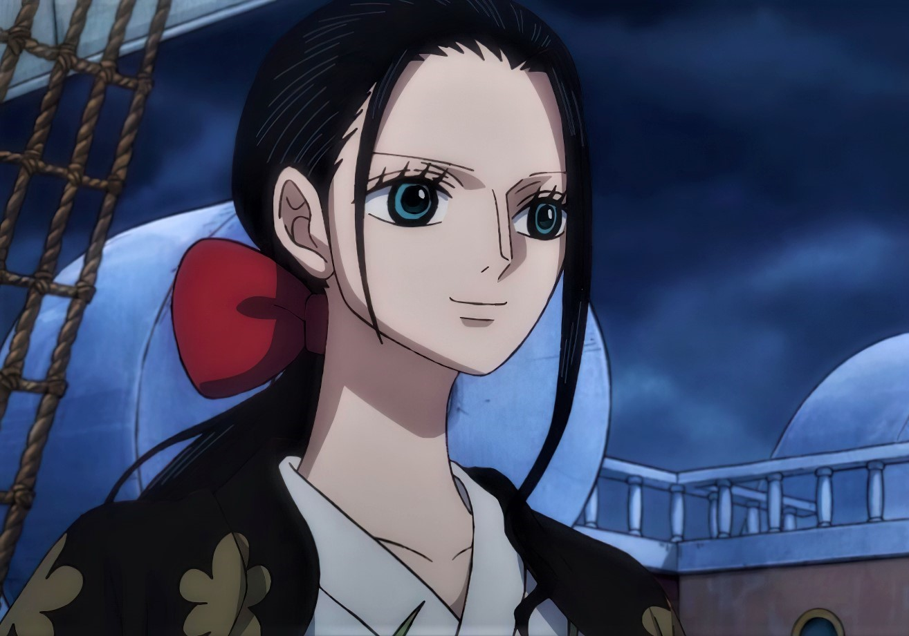
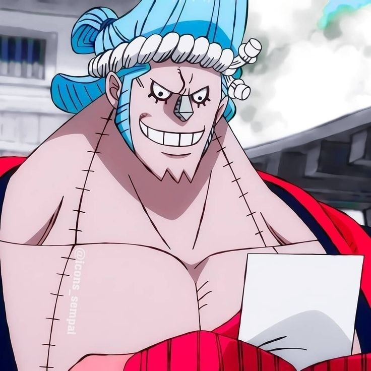

Zoro O Caçador de Piratas
Zoro, que é conhecido como O Caçador de Piratas, é um pirata e ex-Caçador de Recompensas,
e também um espadachim que usa 3 espadas.
Ele foi o primeiro membro a se juntar aos Piratas do Chapéu de Palha,
e até o momento, é considerado a maior ameaça e membro mais perigoso depois de Luffy.

Nami A Gatuna
Nami é a navegadora do Bando dos Chapéu-de-Palha.
Quando criança foi abandonada por seus pais, porém acabou sendo adotada por Bellémere,
compondo uma família ao lado da marinheira e de outra órfã, Nojiko.
Desde criança Nami sempre amou desenhar mapas, afirmando que seu maior sonho era desenhar um mapa do mundo.

God Usopp
"God" Usopp é o Atirador dos Piratas do Chapéu de Palha.
Ele é o quarto membro da tripulação e o terceiro a entrar.
Embora ele tenha deixado a tripulação durante um conflito com luffy, ele se juntou novamente após acontecimentos que viriam a ocorrer.
Apesar de sua covardia normal, Usopp sonha em se tornar um corajoso guerreiro do mar como seu pai,
e vive todos os dias em busca de viver à altura deste sonho.

Sanji Perna Negra
Sanji nasceu no North Blue na Família Vinsmoke,
a família real do Reino Germa. Enquanto ele e seus três irmãos nasceram no mesmo dia,
Sanji nasceu em terceiro lugar, tornando-o terceiro príncipe do reino.
Durante sua infância, que ele passou no Reino Germa, Sanji foi maltratado por seus irmãos por servir comida aos que consideravam ser "ratos".
Seu pai, Vinsmoke Judge, não mostrou nenhuma preocupação com ele,
dizendo-lhe que ele era inútil e uma vergonha para a família,
porque ele escolheu se envolver em atividades que Judge considerava "abaixo da realeza".
Sanji é o cozinheiro do bando e tem como sonho encontrar o All Blue, o encontro de todos os mares.

Tony Tony Chopper
Chopper foi originalmente uma rena ligeira e estranheza de um nariz azul, ele era mal tratado pelo rebanho,
o causou a rena que até mesmo seus pais, para tratá-lo como um proscrito (sempre fazendo-o seguir o rebanho de longe).
No entanto, quando o jovem rena comeu a Hito Hito no Mi , ele foi ainda mais condenado ao ostracismo do seu rebanho
(e com o aumento da inteligência concedida pelo fruto, agora agudamente consciente disso) e bateu para fora por conta própria.
Infelizmente para Chopper, suas tentativas de se comunicar com os humanos na Ilha de Drum foi desastrosa,
ele foi baleado por aldeões que o confundiram com o Abominável Homem das Neves.
Chopper é o médico do bando e vive embsado na teoria que para tudo existe uma cura,
sonha em criar um remédio que cure todas as doenças.

Nico Robin O Demônio de Ohara
Nico Robin nasceu na ilha de Ohara, e veio de uma família de arqueólogos.
Sua mãe, Nico Olvia, saiu para o mar para encontrar a verdadeira história quando Robin tinha dois anos de idade, deixando-a ao cuidado do irmão de Olvia e sua esposa, Roji.
O pai de Robin nunca foi revelado, Olvia afirmou que ela vai honrar o sonho do marido, ela então deixou de estudar os põlglifos.
Robin mais tarde vagou para a Árvore do Conhecimento e foi autorizada a ler os livros mantidos dentro do convite de Clover.
Robin é a arqueóloga do bando, sendo uma das poucas pessoa no mundo que sabe ler os põlglifos,
pois saber ler tais pedras podem levar você a morte pelas mãos de quem controla o mundo, O Governo Mundial.

Franky O Ciborgue
Franky é o carpinteiro dos Piratas do Chapéu de Palha. Ele é um cyborg de 36 anos de Water 7 e foi introduzido na história como o líder da Família Franky, um grupo de desmantelamento de navios.
Ele foi originalmente chamado de "Cutty Flam" até trocar seu nome original por seu apelido a pedidos de Iceburg para esconder sua identidade.

Brook Soul King
Brook foi encontrado por Luffy e sua equipe em uma ilha fantasma conhecida como Thriller Bark, no Triângulo Florian.
O pirata viveu lá por quase 50 anos após a morte de sua tripulação.
Sua antiga equipe foi vítima de doenças e diferentes inimigos.
Brook sobreviveu apenas graças à fruta Yomi Yomi no Mi, que lhe proporcionou uma segunda vida como um esqueleto imortal.
Brook é o músico do bando, que traz alegria e diversão para as viagens dos mugiwara`s.

Jinbe o Cavaleiro do Mar
"O Cavaleiro do Mar" Jinbe é o timoneiro dos Piratas do Chapéu de Palha.
Ele é o décimo membro da tripulação e o nono a se juntar, fazendo isso durante o Arco País de Wano.
Jinbe é um homem-peixe sendo um tubarão-baleia e um poderoso mestre do karatê Homem-Peixe.
Um Homem-Peixe Jinbe sofre com os preconceitos e discriminação por sua raça,
sendo um fato que impulsiona luffy a querer acabar com esses preconceitos.